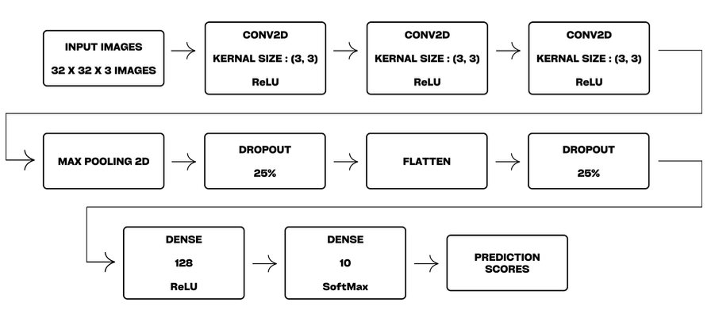
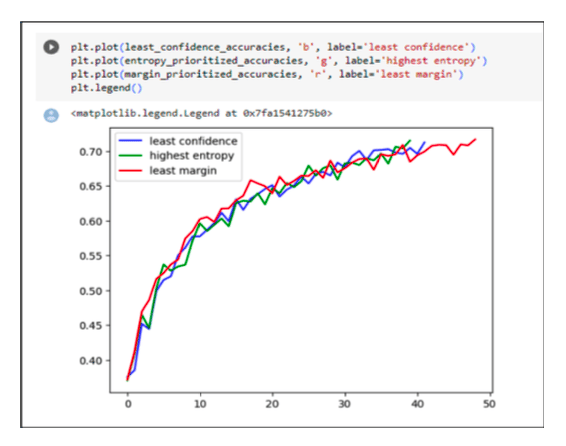

Active Learning
Benchmarking active learning query strategies against random sampling across three image classification datasets.
Abstract
Active learning is a specific instance of supervised machine learning. The idea is that a model can reach higher accuracy with fewer training labels if it gets to choose which data it learns from. Starting from a small labeled set, the model is trained repeatedly to predict labels for unlabeled data, and the points it's least certain about get selected for labeling next. That loop repeats until the model hits the target accuracy.
By actively choosing which points to label, this approach shrinks the training set needed to build a high-performing classifier, cutting the cost and time of labeling while still reaching high accuracy. This paper applies active learning to the Fashion MNIST, EuroSAT, and CIFAR-10 datasets, and compares three query strategies, Margin Sampling, Entropy Sampling, and Least Confidence, against a random sampling baseline.
Datasets
- CIFAR-10: 60,000 low-resolution images across 10 categories, a standard benchmark for image classification.
- EuroSAT: 27,000 satellite images across 10 land-use classes, used for remote sensing analysis.
- Fashion MNIST: 70,000 grayscale images of apparel items, a modern alternative to MNIST for image recognition.

Method
The framework starts with a small labeled training set, pre-trains a deep learning model, and runs it over the unlabeled data to generate feature maps. Query strategies then identify the data points the model is most uncertain about:
- Least Confidence measures how confident the model is in its top prediction.
- Margin Sampling looks at the confidence gap between the top two predictions.
- Entropy Sampling calculates uncertainty from the full probability distribution.
Those uncertain samples get manually annotated, added back into the training set, and the model is retrained. Each cycle refines classification accuracy while keeping the manual labeling workload concentrated on the samples that matter most.
Architecture
The classifier is a CNN processing 32x32x3 images through three Conv2D layers with 3x3 kernels and ReLU activation, extracting spatial features like edges and textures. MaxPooling2D layers reduce spatial dimensions, and dropout layers (25% and 40%) control overfitting. After flattening, a Dense layer with 128 units feeds a final Dense layer with 10 units and softmax activation for class probabilities.

Results
Active learning outperformed traditional training across all three datasets. Baseline accuracy from standard training was 70.49% on CIFAR-10, 85.94% on EuroSAT, and 86.11% on Fashion MNIST.
Margin Sampling generally produced the strongest gains across all three datasets, with Least Confidence and Entropy Sampling close behind. The consistent takeaway: active learning improves performance while needing fewer labeled samples than random sampling to get there.
